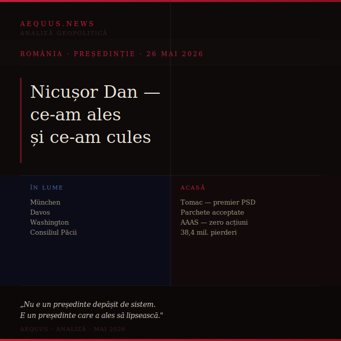

München, Davos, Washington — Consiliul Păcii. Acasă: Tomac premier, parchete acceptate, companii de stat pe pilot automat. Nu e un președinte depășit de sistem. E un președinte care a ales să lipsească.

Există o diferență fundamentală între un președinte slab și un președinte absent. Primul e depășit de circumstanțe. Al doilea a ales unde să fie — și implicit unde să nu fie.
Nicușor Dan a ales. München, Davos, Washington, Consiliul Păcii. Agenda internațională e reală, prezențele sunt documentate, imaginea globală se construiește metodic. Nu e rătăcire — e strategie.
Problema e ce rămâne acasă când președintele construiește imagine în afară.
| Nicușor Dan — în lume | România — acasă |
| München — conferința de securitate | Tomac — premier anunțat prin Antena 3, cu satisfacția PSD |
| Davos — agenda economică globală | Șefii parchetelor — acceptați fără rezistență (Euronews) |
| Washington — Consiliul Păcii | AAAS — planuri copy-paste, 38,4 milioane pierderi, zero acțiuni |
Mandatul lui Nicușor Dan a început cu un capital imens: cel mai mare scor prezidențial din ultimii ani, un mandat implicit de ruptură față de sistemul PSD, așteptări reale din partea unui electorat care a crezut că lucrurile se pot schimba.
În primele săptămâni, capitalul s-a cheltuit rapid și în direcții precise. Un premier ales nu pentru ce poate face, ci pentru ce nu va deranja — convenit cu PSD, binecuvântat de Băsescu. Șefi de parchete acceptați fără luptă publică, fără negociere vizibilă, fără niciun semnal că justiția independentă e o prioritate. Instituții lăsate să funcționeze pe inerție, cu planuri copiate și consilii de administrație politice.
Iohannis a perfecționat modelul în al doilea mandat: prezență protocolar-externă, absență executivă internă, delegare tacită către parteneriate convenabile. Nicușor Dan părea să fie antiteza acestui model. Omul concret, tehnicianul, cel care rezolvă.
Ce vedem în primele săptămâni sugerează altceva: un președinte care a descoperit că scena globală e mai confortabilă decât negocierea internă, că imaginea de lider european e mai ușor de construit decât reforma reală, că un premier slab e mai ușor de gestionat decât unul puternic.
Mandatul abia a început. Tabloul de azi nu e definitiv. Dar primele alegeri ale unui președinte spun mai mult despre direcție decât orice discurs inaugural. Iar alegerile de azi — Tomac, parchetele, absența — vorbesc clar.
Ce-am ales, vedem. Ce-am cules, urmează.